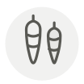

Cai pu (radis salé séché)
Cai pu
| Nom latin | Raphanus sativus var. longipinnatus |
|---|---|
| Famille | Condiments & ferments |
| Origine | Chaoshan, Guangdong |
| Saison | Toute l’année |
| Goût | Salé · Sucré · Umami · Terreux |
| Prix courant | 8–15 €/kg |
Ce que c’est
Le Chaoshan sale et sèche le radis blanc au soleil depuis des siècles, et les jarres les plus anciennes, le lao cai pu, sont gardées des décennies jusqu’à ce que les lanières soient noires et servent moins d’aliment que de remède domestique contre les maux d’estomac. Le sel et le soleil concentrent les sucres : voilà pourquoi il rissole sucré et non pas seulement salé.
En cuisine
Rincez, pressez, hachez, puis faites-le frire à l’huile jusqu’à ce que les bords croustillent avant d’ajouter les œufs ou l’appareil à gâteau de radis : l’arôme sort de la poêle, jamais du sachet.
S’accorde avec
Œuf Riz Ail Poivre blanc Porc Sucre blanc Cébette Daïkon
Même espèce
Bettarazuke Radis noir Daïkon Dongchimi Fukujinzuke Iburigakko
Une erreur ici, ou un oubli ? Dites-le nous